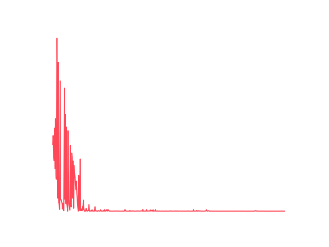
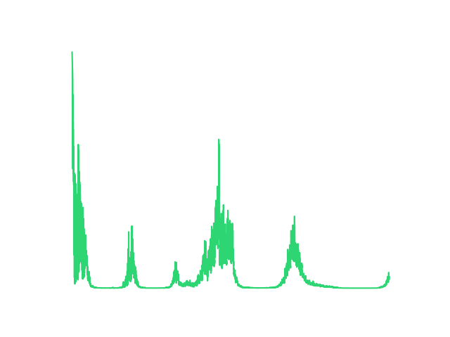
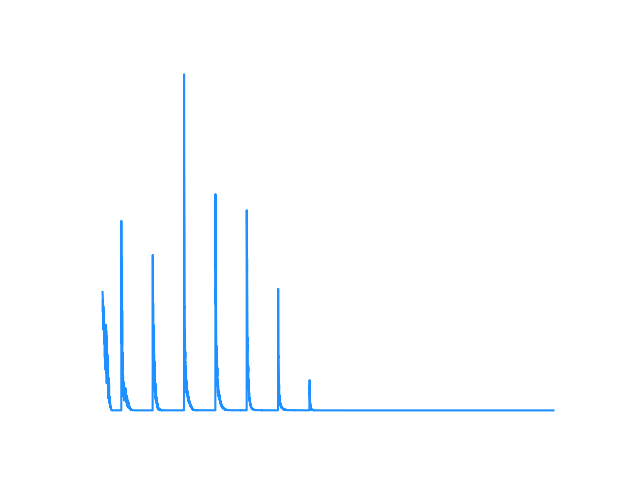
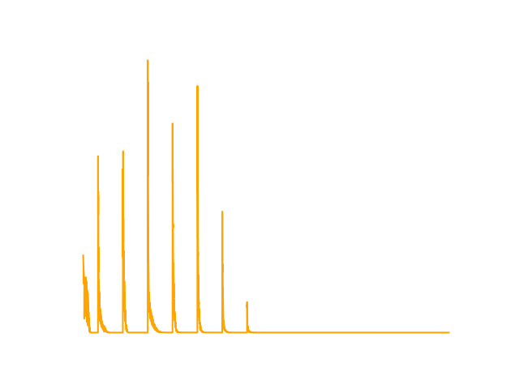

Q&A and Results Showcase
In static mode, all objects are fixed. The state is represented as a flattened 64-dimensional array.

Naive DQN Loss

Experience Replay DQN Loss

Double DQN Loss

Dueling DQN Loss
We converted the model to PyTorch Lightning (LitDQN class) for the hardest random environment. To stabilize training in this chaotic mode, we integrated:
nn.SmoothL1Loss() to prevent exploding gradients when rewards fluctuate wildly.StepLR to gradually decay the learning rate, helping the model fine-tune its policy as it converges.gradient_clip_val=1.0 in the Trainer to ensure updates remain within a stable bound.The PyTorch Lightning model successfully encapsulated the training loop. By applying these tips, the model avoided catastrophic forgetting in the random environment where all objects (Player, Goal, Pit, Wall) spawn arbitrarily, successfully converging across epochs.